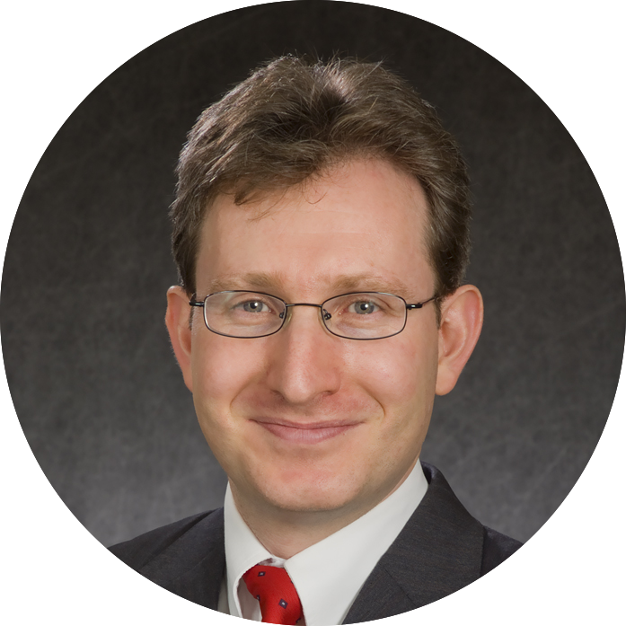

Anthony Samir, MD
Assistant Professor of Radiology
Service Chief, Body Ultrasound MGH,
Director, MGH Center for Ultrasound Research & Translation
Massachusetts General Hospital
Harvard Medical School
Abstract
In this talk, Dr. Samir will introduce the concept of combining machine learning algorithms and surgical robotics to perform automated ultrasound-guided interventions. He will discuss the structure and management of an interdisciplinary medical and engineering team focused on the production of a specific translational technology and will share interesting examples of common challenges encountered by research groups. He will also introduce the MGHJ Center for Ultrasound Research & Translation.
Short Bio
Dr. Anthony Samir is a physician-scientist and translational researcher who has made multiple contributions in medical ultrasound. His contributions have included original research and organizational leadership, with emphasis on shear wave elastography, quantitative imaging biomarkers, acoustic soft tissue characterization, noncontact ultrasound, and machine learning. He is internationally recognized as a liver imaging leader and is the founding director of the MGH Center for Ultrasound Research & Translation, a productive bench-to-bedside research center and enabler of biomedical engineering research at MIT, Harvard, and beyond. He conceived and executed two major translational trials of shear wave elastography that were key to subsequent clinical and regulatory acceptance. He also developed novel algorithms for the quantification of liver fat and invented techniques to reduce measurement variability and improve diagnostic accuracy in shear wave elastography. These techniques resulted in multiple publications spanning journals such as Radiology, the Journal of Ultrasound in Medicine (clinical research, machine learning research), Ultrasound in Medicine and Biology (acoustic signal processing research), Nature Medicine, and numerous conference proceedings including IEEE EMBC, and CVPR. He has held multiple NIH, Foundation and industry awards and is a co-PI of the NIMBLE consortium. He is co-inventor of non-contact laser ultrasound, a technology capable of acquiring ultrasound imagery from the living human body at distances of up to 10 feet and of AI-GUIDE, a machine learning enabled ultrasound-guided interventional robotic platform that won a 2021 R&D100 Award and a 2022 MIT-Lincoln Laboratory Best Invention Award. Dr. Samir is (1) co-chair of the QIBA PEQUS committee, where he leads ~50 physicians, physicists, and engineers focused on attenuation, backscatter, and sound speed for hepatic imaging; (2) co-PI of the Foundation for the National Institutes of Health NIMBLE consortium, comprising 13 companies, NIH, and FDA, where he is responsible for ultrasound biomarker translation and evaluation; (3) chair of the American Institute of Ultrasound in Medicine (AIUM) AI Community of Practice; and (4) chair of the AIUM Conditional Increased Output Task Force. Dr. Samir has mentored more than 40 post-doctoral research scientists and numerous faculty mentees, three of whom have received career development awards in fields as diverse as breast imaging, thoracic oncology, and liver disease. He is the 2022 recipient of the MGH Radiology Thrall Mentorship Award and was nominated for the MGH-wide Potts mentorship award. He is also Service Chief at the Massachusetts General Hospital Division of Ultrasound, where he oversees 50 ultrasound technologists performing 75,000 sonograms per year at ten clinical sites.
Content carried over from https://ncigt.org/anthony-samir-md-an-introduction-to-ai-guide/.